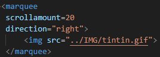
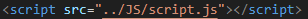
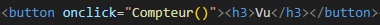
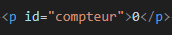
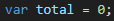
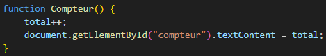

Explications du mini-jeu |
Cette page vise à expliquer de façon simple le mini jeu précédent. |
Partie 1 : l'image animée qui bouge |
Voici comment j'ai fait pour mettre une image de Tintin qui bouge de gauche à droite : |
|  |
Dans cette capture d'écran on peut voir la balise "marquee"
qui sers a ce que tout ce que l'on mette dedans, bouge dans
la direction qu'on veut, à l'infini. On peut le voir avec
le paramètre "direction=right" qui indique de faire bouger
les éléments de gauche à droite. Ensuite le paramètre
"scrollamount" permet de varier la vitesse de déplacement
des éléments, et enfin dans cette balise on vient mettre
notre élément à faire bouger, ici une image, pour que le
joueur puisse avoir l'illusion qu'il joue à repérer les
Tintins qui bougent. |
Partie 2 : le compteur qui s'incrémente |
Voici comment j'ai fait pour faire un nombre qui grandit quand on clique sur un bouton : |
J'ai commencer par relier un fichier javascript à ma page |
 |
J'ai ensuite rajouté un bouton avec en paramètre :
une fonction (qui sera défini plus tard) sur ma page. |
 |
J'ai ensuite rajouté un paragraphe avec un id : "compteur"
, qui permettra de retrouver ce paragraphe plus tard pour
changer sa valeur. |
 |
Maintenant du côté du fichier javascript : |
|  |
Dans la première ligne du fichier j'ai mis une variable : "total"
qui va augmenter au fur et à mesure que le joueur va cliquer sur le
bouton. |
|  |
Enfin on a la fonction : "Compteur", qui va avoir comme role
d'augmenter de 1 la variable (c'est le rôle du "++"), et ensuite
ça va redéfinir le texte qui se trouve dans le paragraphe avec
l'id "compteur", par le chiffre total de click.
|
Conclusion : |
J'ai des éléments simples de HTML et Javascript, pour donner un mini-jeu très basique et correct.
Néanmoins, le jeu est plus une illusion qu'autre chose, il ne se passe rien et on ne clique pas et le
jeu ne sauvegarde pas la progression du joueur, ce qui aurait pris beaucoup plus de temps à implémenter
et à faire marcher ensemble. Je remercie le site w3schools qui m'a permis d'en apprendre plus sur le
HTML et le Javascript, et je vais mettre une liste de pages qui m'ont aidé à la réalisation de ce site.
|
- Balise "marquee"
- Balise "bouton"
- Balises "liste"
- Fontions Javascript
|
>>> Retour au mini-jeu Tintin <<< |
|